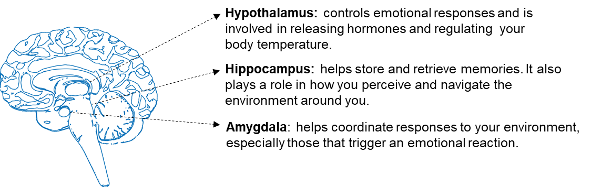

Strides For Emotional Regulation
Your Guide To Managing Your Emotions
5 Sessions
Introduction
This intervention will teach you about regulating emotions and why it's important to manage them in healthy, positive ways. You'll learn how emotions appear in our daily lives and how they impact our mood and actions. We'll provide you with tools and resources to increase your awareness about your emotions and feelings, how you express and self-regulate them.
Welcome to "Strides for Emotional Regulation," a science-based program designed to help you navigate emotions in a healthy and positive way. These strategies can be used together or individually to enhance your understanding of your feelings and emotions in daily life, ultimately improving your thinking patterns and mental health.
Emotional regulation skills can be learned and improved over time. You may notice that some people are better at regulating their emotions than others. This is due to their emotional intelligence and awareness of their own and others' feelings in various situations. As we progress through these sessions, you too will be able to enhance your emotional awareness and benefit your mental health.
Session 1: Understanding Emotional Regulation
Session 1 Overview
In this first session, we will explore what emotional regulation is and how our body experiences emotions. We will look at examples of common emotion regulation strategies that we use in our daily lives, both constructive and unconstructive. Lastly, we will guide you in understanding the patterns that emerge when we try to interpret our feelings during times of overwhelm.
Learning Objectives
- Increase your Understanding on How Emotions Work: Learn how the emotions you face are a normal part of everyday life, and how your ability to respond to emotional experiences can help you cope with difficult situations in a healthy, constructive way.
- Identify Positive and Negative Coping Strategies for Regulating Emotions: Increase your awareness of how to adjust your perception of thoughts, feelings, and emotions to benefit your mental health.
- Build your Knowledge on How Emotions Function:Expand your understanding of which parts of the brain are involved in regulating emotions and your role in managing emotions during stressful situations.
Understanding Emotional Regulation?
How do you usually handle your emotions?The way you do this, whether positively or negatively, is through your ability to regulate emotions. Emotional regulation is a crucial skill for interacting with others and reflecting on your own thoughts. It helps you manage and react to your feelings, and like any skill, it takes time and patience to develop.
What is Emotional Regulation?
Emotional regulation is the process of recognizing, experiencing, and acting on your emotions. Improving this skill boosts your emotional intelligence and mental health. In stressful situations, emotional regulation helps you adjust your thoughts and actions to stay calm and focused.
Factors Influencing Emotional Regulation:
- Biological Factors: Genetics, brain chemistry, and physical health play roles in your ability to regulate emotions.
- Mental Health Conditions:Conditions like depressive, anxiety, and bipolar disorders can challenge your emotional regulation skills
- Social and Cultural Factors:Supportive relationships and a positive community can help you navigate strong emotions. Different cultures may encourage or discourage emotional expression, impacting emotional regulation from a young age.
By understanding and improving your emotional regulation, you can better manage stress and enhance your overall well-being.
Effective Emotional Management
Effective emotional management is all about adjusting the way you experience or express your feelings. This can be done in several ways and activities to calm down and reducing the intensity of emotions you are experiencing. Review the charts below and see which emotion regulation strategies you are currently using, and which ones you would like to adopt.
The Brain and Emotional Processing
The brain plays a crucial role in how you control and process your emotions.
The limbic system, which includes the amygdala, hippocampus, limbic cortex, and hypothalamus, controls emotions. Review the diagram below to see which parts of the brain are associated with the emotions you feel.
Life Event Cycle of Emotional Regulation
As we go through our day, we encounter situations that may be challenging or stressful, and it isn't always simple to avoid negative emotions. So, what do you do in that scenario? Even a small event can escalate if we let our perspective and analysis lead to more thoughts and feelings that may not be related to the present situation.
The cycle below illustrates how an event can trigger a cascade of thoughts, bodily reactions, and actions.
Wrap-up
Emotional regulation involves making conscious decisions about when and how to manage life events. Whether it's through internal methods like reflection and mindfulness or external methods like talking to friends or taking a walk, you choose the steps to work through your emotions in a healthy way.
Next Steps
Try the following:- 1. Reflect:Consider how you've navigated strong emotions in the past. What can you do to improve or add to these strategies?
- 2. Review:Go over the figures from this session and discuss them in your next meeting with the Mindstride Team. What are you most looking forward to trying?
- 3. Test your knowledge:Take the quiz below to test what you've learned in this session.
Finish and Test Your Knowledge
Now it’s time to see how much you understood in this session. These questions are simply meant to help you get the most out of this session and are not graded or scored!
Click the test your knowledge and once you have finished it, the session will be submitted as complete.